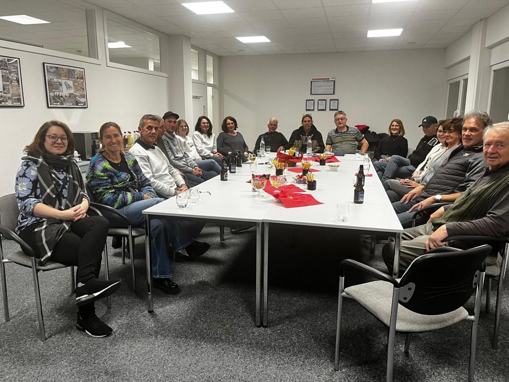

Seit 2001 gemeinsam für Kleingartach
Wer wir sind, was wir tun und wie aus 20 Betrieben ein Verein mit 31 Mitgliedern wurde.
Damit es in Kleingartach weiter Bäcker, Metzger und Handwerker gibt
Der Handels- und Gewerbeverein Kleingartach e. V. wurde am 7. November 2001 aus einer Interessengemeinschaft gegründet. 20 Betriebe machten den Anfang, heute sind es 31.
Der Verein wirkt dem Rückgang der Gewerbebetriebe im ländlichen Raum entgegen: mit Kommunikation, gemeinsamen Veranstaltungen und besonderen Aktionen. Schon 2003 stellte der HGV einen Infopoint mit Ortsplan der Mitgliedsbetriebe in den Ortskern und brachte die erste Weihnachtsbeleuchtung in die Zabergäustraße.

- Weihnachtsbeleuchtung
Seit 2003 in der Zabergäustraße, seit 2013 mit LED-Sternen, heute mit 5.000 Lichtern am Kirchplatz.
- Lichterfest und Osterbrunnen
Am 1. Advent und im Frühjahr wird der Kirchplatz zum Treffpunkt für den ganzen Ort.
- Weinstraßenfest mit Gewerbeschau
Alle zwei Jahre wird die Zabergäustraße zur Festmeile der Kleingartacher Betriebe.
- Irish Folk Night
Seit 2013 Livemusik in der Stadthalle Kleingartach, dazu Kabarett wie 2019 mit Klaus Birk.
- Zu Gast bei
Seit 2025 öffnen Mitgliedsbetriebe ihre Türen für den Verein.
- Ausflüge und Stammtische
Mitgliederausflüge mit Stadtbahn, Stadionbesuch oder Weinprobe, dazu Themenstammtische.
25 Jahre in Stationen
- 2001
Gründung am 7. November mit 20 Betrieben.
- 2003
Infopoint mit Ortsplan und erste Weihnachtsbeleuchtung in der Zabergäustraße.
- 2013
LED-Sterne, erstes Lichterfest am Kirchplatz, erste Irish Folk Night.
- 2019
21. Weinstraßenfest mit Gewerbeschau, Kabarett mit Klaus Birk.
- 2025
Start von „Zu Gast bei“, neue Beleuchtung mit 5.000 Lichtern.
- 2026
25 Jahre HGV, Jubiläumsfest am 17. Mai auf dem Schillerplatz.